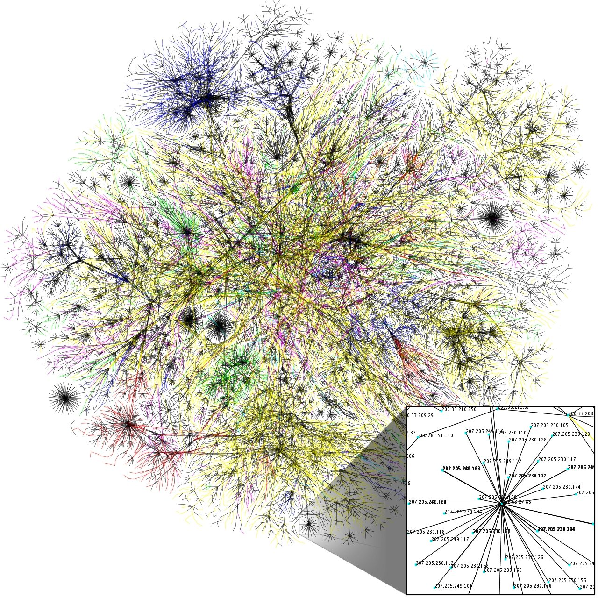
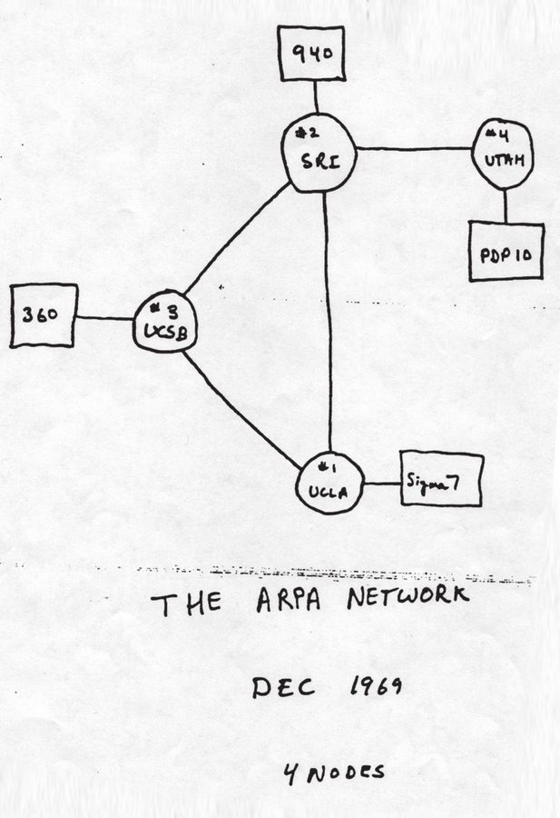
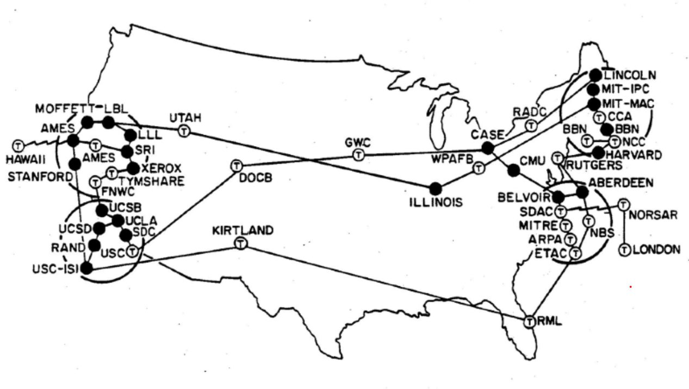

S1C'est quoi Internet ?
≈ 1 h 30Poser sa propre définition, découvrir ce que veut dire « réseau des réseaux », puis remonter toute l'histoire d'Internet — d'ARPANET au modèle TCP/IP, avec la France dedans.
Avant tout : c'est quoi, Internet ?
On utilise Internet tous les jours sans jamais avoir eu à le définir. C'est l'exercice du jour — et il est plus difficile qu'il n'en a l'air. Aucune recherche : ce qui compte ici, c'est ce que tu as déjà en tête.
En cliquant, le reste de la page se floute : tu écris sans rien pouvoir recopier. Il n'y a pas de bonne réponse attendue à ce stade.
Inter + Net : le réseau des réseaux
Le mot Internet est un mot-valise anglais, et sa fabrication dit exactement ce qu'est la chose :
| Morceau | Vient de | Veut dire |
|---|---|---|
Inter | interconnected | interconnecté — et non « international », erreur fréquente |
Net | network | réseau |
« Internet » = inter-networks : l'interconnexion de tous les réseaux de la planète. En reliant entre eux les réseaux des militaires, des universités, des gouvernements, des entreprises, des fournisseurs d'accès, on obtient un réseau géant qui couvre une grande partie du globe. D'où son surnom : le réseau des réseaux.
Internet est un gigantesque réseau mondial d'ordinateurs reliés par des lignes de transmission de tous types : câbles en fibre optique (l'immense majorité du trafic), satellites, lignes téléphoniques, ondes radio. C'est l'ensemble de ces machines et de leurs liaisons qui s'appelle Internet. Chaque machine qui s'y raccorde y possède une adresse unique, du type 194.167.250.2 : une adresse IP. Le service le plus connu qui circule dessus s'appelle le World Wide Web.

Cette fois, ta réponse est corrigée : tu verras ce que tu avais écrit au départ juste à côté. Cette définition devient l'entrée « Internet » de ton glossaire.
⚠️ Internet et le Web ne sont pas la même chose. C'est l'erreur la plus fréquente — et c'est le tout premier point de la séquence sur le Web.
Aux origines d'Internet
🎧 Épisode 1/8 de la série Une histoire de l'Internet — Julien Le Bot, France Culture, 2022 · 13 min. Casque recommandé ; tu peux mettre en pause quand tu veux.
- Asynchrone
- Qui ne se fait pas en même temps : j'écris maintenant, tu lis plus tard (comme un mail).
- Télégraphe
- Ancêtre du réseau : des messages codés envoyés par fil électrique, dès le XIXe siècle.
- Protocole
- Ensemble de règles communes pour se comprendre. On le travaille en détail à la séance 3.
- Nœud
- Point de raccordement du réseau : une machine reliée aux autres.
- Guerre froide
- Période de tension entre les États-Unis et l'URSS (1947-1991), sans affrontement direct.
ARPANET : l'ancêtre américain
ARPANET est le premier grand réseau d'ordinateurs à découper les messages en petits morceaux, envoyés chacun de leur côté puis rassemblés à l'arrivée. Il est rendu opérationnel en 1969 par la DARPA, une agence de recherche militaire américaine. En pleine guerre froide, l'idée est notamment de bâtir un réseau sans centre : si un nœud est détruit, les autres continuent de communiquer. Mais ce sont surtout les universités qui vont écrire son histoire.


| Date | Événement |
|---|---|
29 oct. 1969 | Premier message entre UCLA et Stanford. Les opérateurs tapent LOGIN ; seules les deux premières lettres, « LO », arrivent avant que le système ne plante 😅 — il faudra environ une heure pour que le mot entier passe |
21 nov. 1969 | Premier lien permanent entre les deux ordinateurs, distants de 500 km |
5 déc. 1969 | Réseau à 4 nœuds : UCLA, Stanford (SRI), UCSB, Utah |
années 70-80 | Expansion : laboratoires et universités rejoignent le réseau |
1990 | ARPANET s'efface, absorbé par Internet |
NCP) sera remplacé plus tard par le modèle TCP/IP.Louis Pouzin, CYCLADES et le datagramme
Au début des années 1970, l'ingénieur français Louis Pouzin (né en 1931, polytechnicien) dirige à l'IRIA — l'ancêtre de l' — le projet CYCLADES, un réseau expérimental reliant des universités et des centres de recherche français. Sa grande idée : le datagramme.

Jusque-là, on imaginait les réseaux comme le téléphone : on établit une ligne de bout en bout, puis on parle. Pouzin propose l'inverse : découper chaque message en petits paquets indépendants, chacun portant l'adresse de destination, chacun libre de prendre son propre chemin à travers le réseau. Si une route est coupée, le paquet en prend une autre ; à l'arrivée, on réassemble le tout. Le réseau devient simple, robuste et sans chef d'orchestre. CYCLADES en fait la démonstration dès 1973.
les ronds orange sont des routeurs : ce sont eux qui font passer chaque paquet d'un point à l'autre du réseau — on y revient en détail dans l'étape « Routage ».
Et l'Amérique dans tout ça ? Les Américains Vint Cerf et Bob Kahn publient en 1974 l'article fondateur de TCP/IP — en s'inspirant directement du datagramme de CYCLADES, ce que Cerf a toujours reconnu. Le 1er janvier 1983, tout ARPANET bascule sur TCP/IP : Internet tel qu'on le connaît est né, et il tourne encore aujourd'hui sur l'idée de Pouzin. Pendant ce temps, faute de soutien, la France abandonne CYCLADES à la fin des années 1970 : les lui préfèrent une autre technologie (Transpac), plus proche du modèle téléphonique…
Ce choix va donner naissance à une autre fierté française : le Minitel, distribué dès 1980 dans les foyers, bien avant que le grand public ne connaisse le Web ailleurs dans le monde.
Chaque paquet porte deux choses : l'adresse de destination et un numéro d'ordre. Rien d'autre. À chaque routeur, il repart par la sortie qui paraît la meilleure à cet instant-là : la plus courte, la moins encombrée, celle qui n'est pas coupée. Deux paquets partis ensemble peuvent donc suivre deux routes différentes.
Conséquence assumée : les paquets arrivent dans le désordre, parfois en double, parfois pas du tout. Le réseau ne promet rien — il fait « au mieux ». Et c'est précisément ce qui le rend solide : comme il ne retient rien de la conversation, il n'a rien à perdre quand une machine tombe.
Alors comment le message arrive-t-il entier ? La remise en ordre ne se fait pas au centre du réseau, mais aux deux extrémités : la machine qui reçoit range les paquets par numéro, jette les doublons et réclame ceux qui manquent. L'intelligence est aux bords, la simplicité au milieu — c'est exactement l'idée de Pouzin, et c'est elle que Cerf et Kahn reprennent.
Une image : envoyer un roman page par page, chaque page numérotée, dans des enveloppes séparées. Peu importe l'ordre du facteur : à l'arrivée, on trie par numéro et il ne manque rien. Qui fait ce tri, et sous quel nom ? On le voit à la séance Protocoles.
D'un réseau militaire à un réseau mondial
| Date | Ce qui se passe |
|---|---|
1958 | Création de l'ARPA, l'agence de recherche du ministère de la Défense américain, en réaction au lancement de Spoutnik par l'URSS |
1969 | ARPANET fonctionne : 4 nœuds universitaires |
1971 | Ray Tomlinson envoie le premier courrier électronique entre deux machines et choisit le signe @ pour séparer l'utilisateur de sa machine. La même année apparaît FTP, pour s'échanger des fichiers |
1976-79 | UUCP (copie de fichiers entre machines Unix par ligne téléphonique) puis Usenet (1979-80) : les premiers groupes de discussion |
1er janv. 1983 | Le flag day : tout ARPANET bascule d'un coup sur TCP/IP. La même année, la partie militaire se sépare et devient MILNET |
1986 | NSFNET, réseau de la National Science Foundation (l'agence fédérale américaine qui finance la recherche), prend le relais d'ARPANET comme épine dorsale civile du réseau |
1990 | ARPANET est débranché : Internet lui a définitivement succédé |
années 1990 | Ouverture au commerce, arrivée du Web chez le grand public |


Internet n'est pas né que dans des laboratoires militaires. En Californie, dans les mêmes années, des groupes très différents veulent mettre l'ordinateur entre les mains de tout le monde — contre les grandes entreprises qui le gardent pour elles :
- 1972 — People's Computer Company : leur mot d'ordre, « le pouvoir de l'ordinateur au peuple ».
- 1973 — Community Memory, à Berkeley : un terminal partagé installé dans un magasin de disques, où chacun laisse des messages. La première communauté numérique grand public.
- 1975 — Homebrew Computer Club : un club de bidouilleurs de la Silicon Valley. Deux de ses membres, Steve Wozniak et Steve Jobs, fondent Apple en avril 1976.
C'est de ce milieu que vient l'idée, encore vivace, de « faire de la politique par la communauté » — et la formule de Steve Jobs sur l'ordinateur, « une bicyclette pour l'esprit » : un outil qui ne remplace pas l'humain mais démultiplie ce qu'il sait faire.
La frise de l'histoire d'Internet
- ⠿Lancement du Minitel en France1980
- ⠿Premier courriel envoyé, avec le signe @1971
- ⠿Invention du Web au CERN1989
- ⠿Création de l'ARPA aux États-Unis1958
- ⠿Création de la CNIL en France
- ⠿ARPANET bascule sur le modèle TCP/IP1983
- ⠿CYCLADES : Louis Pouzin démontre le datagramme1973
- ⠿ARPANET est débranché1990
- ⠿Premier message envoyé sur ARPANET1969
- ⠿Usenet : les premiers groupes de discussion
- ⠿NSFNET prend la relève d'ARPANET
- ⠿Trois réseaux différents reliés pour la première fois
@. La même année naît FTP, pour s'échanger des fichiers.Enquête : Internet est arrivé chez toi
- En quelle année Internet est-il entré chez eux ? Comment se connectait-on ?
- Qu'en faisaient-ils au début ? Leur tout premier souvenir en ligne ?
- Qu'est-ce qui a le plus changé dans leur vie quotidienne — dans les années 1990, puis 2000 ?
- Est-ce qu'Internet leur a fait peur, au départ ? De quoi ?
- Y a-t-il quelque chose qu'ils regrettent du monde d'avant ?
Débat : Internet a-t-il tenu ses promesses ?
« De l'utopie des débuts au cauchemar totalitaire. »— formule employée dans la série Une histoire de l'Internet, France Culture, 2022
Tu as fini avant les autres ? Voici de quoi creuser (facultatif, mais valorisé).
S2Le réseau physique
≈ 1 h 30Le réseau, pour de vrai : comment les machines sont reliées entre elles, ce qui dort au fond des océans, et par où la connexion arrive jusqu'à chez toi.
Le réseau des réseaux : les topologies
Avant de lire la moindre définition, observe : dans le bus, les machines sont posées les unes à la suite des autres sur un même fil ; dans l'étoile, chacune est reliée à un appareil central ; dans le maillé, chaque machine touche plusieurs voisines. À toi de creuser ce que ça change.
Côté réseaux locaux, en revanche, le bus (le vieux câble coaxial des années 1980-90) a bel et bien été abandonné : un seul mauvais connecteur ou une coupure suffisait à planter tout le segment. On est passé à l'étoile, autour d'un switch — plus une machine ne fait tomber les autres si elle flanche.
Les câbles sous-marins : l'autoroute invisible
En cliquant sur un point ou un câble, ses informations s'affichent : nom, année de mise en service, longueur, propriétaires. Tu vas t'en servir tout au long de l'étape.
| Nom du câble | Année | Provenance | Longueur | Propriétaire(s) |
|---|---|---|---|---|
| Apollo | ||||
| HUGO |
Tu as fait le tour ? Affiche le bilan à retenir.
Du réseau mondial à ta maison
Le grand réseau mondial se termine par un « dernier tronçon » jusqu'à ton logement. Ce tronçon peut emprunter plusieurs technologies :
| Technologie | Comment ça passe | Débit (ordre de grandeur) | Où ? |
|---|---|---|---|
| Fibre optique | de la lumière dans un fil de verre | très haut débit (jusqu'à ≈ 1 Gbit/s et plus) | surtout les villes, mais s'étend vite |
| ADSL / VDSL | un signal électrique sur la vieille ligne téléphonique en cuivre | limité (≈ 1 à quelques dizaines de Mbit/s) | presque partout… mais en voie de disparition (voir encart) |
| 4G | ondes radio (mobile), via les antennes | bon (≈ quelques dizaines de Mbit/s) | zones couvertes par le réseau mobile |
| 5G | ondes radio plus récentes, plus rapides | très élevé, et surtout latence plus faible | déploiement en cours, d'abord les villes |
| Satellite | un signal qui monte et redescend de l'espace | correct | partout, même les « zones blanches » ; latence souvent plus élevée |
La 4G/5G sert à la fois pour le mobile et, de plus en plus, comme connexion principale à la maison (box 4G/5G) dans les zones mal fibrées.
Recherche autorisée pour ces trois-là — mais reformule (le copier-coller reste bloqué). Elles rejoignent ton glossaire.
Tu as tout parcouru ? Affiche le à retenir.
Les données et leur trafic
Lecture : en 1992, le trafic mondial était d'environ 100 Go par jour ; en 2022, on en est à ≈ 153 000 Go… par seconde. Un trafic multiplié par ≈ 1000 en vingt ans. Source : Banque mondiale, Rapport sur le développement dans le monde 2021 · données Cisco VNI.
Les 5 plus grands acteurs (Netflix, Akamai, Amazon, Google, Meta) pèsent à eux seuls ≈ 47 % du trafic vers les clients des fournisseurs d'accès français. La plupart distribuent surtout de la vidéo. Source : ARCEP, L'état d'internet en France — décomposition du trafic (fin 2024).
Tu as tout parcouru ? Affiche le à retenir.
Tu as fini avant les autres ? Voici de quoi creuser (facultatif, mais valorisé).
S3Protocoles, modèle TCP/IP et routage
≈ 1 h 30Entrer dans la mécanique : ce qu'est un protocole, qui fait quoi entre TCP et IP, et comment les routeurs trouvent le chemin — table de routage à l'appui.
C'est quoi, un protocole ?
Quand tu croises un ami, il y a des règles implicites : on se salue, on demande « ça va ? », on répond. Quand on rencontre une personnalité importante, le « protocole » est différent — et très codifié. Deux ordinateurs, c'est pareil : pour échanger, ils doivent suivre exactement les mêmes règles, sinon c'est le dialogue de sourds.
TCP et IP.Les modèles en couches : OSI et TCP/IP
🎬 Cookie connecté — Le modèle OSI et le modèle TCP/IP. Mets en pause dès que tu veux noter quelque chose.
- Couche
- Étage du travail réseau. Chaque étage rend un service à celui du dessus et ignore le reste.
- Modèle
- Une façon de découper et de décrire le travail — pas un logiciel installé quelque part.
- Encapsuler
- Emballer une donnée en lui ajoutant une étiquette, comme un colis dans un autre colis.
- Accusé de réception
- Message qui confirme « j'ai bien reçu ». Le cœur de la différence TCP / UDP.
Pour que des appareils construits par des marques différentes, dans des pays différents, à trente ans d'écart, arrivent à se parler, il a fallu répartir le travail en étages. Chaque étage a un métier et un seul, et ne s'occupe pas de ce que font les autres : celui qui découpe le message ignore s'il voyagera par fibre ou par Wi-Fi.
Il existe deux découpages, et on ne les confond pas :
| Modèle OSI un modèle général, idéal | Modèle TCP/IP le modèle pratique — celui d'Internet, à connaître « par cœur » |
|---|---|
| 7 couches — le modèle théorique de référence, très détaillé (Open Systems Interconnection) | 4 couches — la simplification, celle qu'utilise réellement Internet |
| À savoir remettre dans l'ordre avec l'aide des descriptions. Pas à apprendre par cœur. | À connaître : c'est celui-là que tu devras savoir reconstruire. |
Dans la pratique, personne ne manipule les 7 couches d'OSI : elles servent de carte de référence. Internet, lui, a fusionné les trois couches hautes et tourne sur un modèle plus léger à 4 couches, TCP/IP. Moins d'étages, c'est plus simple à construire et à faire dialoguer des machines conçues par des marques différentes — d'où son adoption partout. On garde donc OSI pour comprendre, et on retient TCP/IP pour savoir-faire.
- ⠿Physique — signaux électriques, lumière ou ondes sur le câble
- ⠿Liaison — organise les données brutes en trames, entre deux machines voisines
- ⠿Réseau — adresse les paquets et choisit leur chemin (IP, routeurs)
- ⠿Transport — découpe, numérote et vérifie l'arrivée des morceaux
- ⠿Session — ouvre, maintient et ferme la conversation entre deux appareils
- ⠿Présentation — met les données dans un format commun (texte, image, chiffrement)
- ⠿Application — parle la langue du service utilisé (le Web, le mail…)
| Couche | Son métier | Exemple |
|---|---|---|
| 4. Application | Parler la langue du service utilisé | le Web, le mail, un jeu |
| 3. Transport | Découper, numéroter, vérifier | TCP, UDP |
| 2. Internet | Adresser et trouver la route | IP, les routeurs |
| 1. Accès réseau | Envoyer physiquement les signaux | fibre, Wi-Fi, câble Ethernet |
Tu envoies « Salut ! » dans une messagerie. À chaque étage descendu, ta donnée reçoit une étiquette supplémentaire — c'est l'encapsulation :
| Étage | Ce qu'on ajoute | Le paquet s'appelle alors |
|---|---|---|
| Application | ton texte, tel quel | un message |
| Transport | le numéro de morceau, le port | un segment |
| Internet | l'adresse IP de départ et d'arrivée | un datagramme |
| Accès réseau | l'adresse de la carte réseau | une trame |
| Le câble | — | des bits (0 et 1) |
Chez ton correspondant, tout se fait à l'envers : on retire les étiquettes une par une en remontant les étages — on décapsule — et il ne reste que « Salut ! ».
Tu as répondu aux questions ci-dessus ? Affiche la synthèse à retenir.
Chaque couche héberge des dizaines de protocoles. Quelques noms que tu verras passer — rien à apprendre ici :
HTTP | afficher une page web |
DNS | traduire un nom de site en adresse IP |
SMTP | envoyer un courriel |
FTP | transférer des fichiers — un des tout premiers, dès 1971 |
DHCP | distribuer automatiquement les adresses IP d'un réseau local |
SSH | piloter une machine à distance, de façon chiffrée |
Et avant TCP/IP ? ARPANET utilisait NCP (Network Control Protocol), remplacé le 1er janvier 1983. C'est la bascule dont parlait la séance 2.
TCP et IP : qui fait quoi ?
TCP (Transmission Control Protocol) découpe le message en paquets numérotés, vérifie que chacun arrive, redemande ceux qui se perdent et réassemble le tout dans l'ordre. IP (Internet Protocol) donne à chaque machine une adresse et s'occupe d'acheminer chaque paquet vers sa destination. TCP = le contrôle qualité · IP = l'adressage et la route.Le routage : l'aiguillage des paquets
Chaque routeur possède une table de routage : « pour telle destination, envoyer au voisin untel ». Exemple, la table de A : pour B → B (direct) · pour C → C (direct) · pour D → C (A n'est pas relié à D, il confie le paquet à C… qui saura se débrouiller).
| Table du routeur C | Table du routeur D | ||
|---|---|---|---|
| Pour | Envoyer à | Pour | Envoyer à |
| A | A | ||
| B | B | ||
| D | C | ||
Ces quatre-là sont des équipements : pour eux, la recherche en ligne est autorisée — mais la définition doit être reformulée avec tes mots (le copier-coller reste bloqué).
Tu as fini avant les autres ? Voici de quoi creuser (facultatif, mais valorisé).
😎 Défi geek : ouvre la console du navigateur (F12) sur cette page… il s'y cache une commande à essayer.
S4Adresses IP, DNS et diagnostic
≈ 1 h 30Chaque machine a une adresse ; le DNS traduit les noms en adresses ; et trois commandes suffisent pour ausculter un réseau soi-même.
L'adresse IP : la carte d'identité réseau
Un ordinateur ne connaît que deux états électriques : courant / pas de courant, notés 1 et 0. Un chiffre binaire s'appelle un bit ; un paquet de 8 bits, un octet, peut prendre 256 valeurs (de 0 à 255). Une adresse IPv4 est un nombre de 32 bits, qu'on écrit en 4 octets séparés par des points : par exemple 192.168.1.226. Ça fait 2³² ≈ 4,3 milliards d'adresses possibles… beaucoup, mais plus assez pour toute la planète !
IP privée, IP publique, DHCP
Vue d'Internet, ta maison n'a qu'une seule adresse publique : celle de ta box. À l'intérieur, la box crée un réseau local (LAN) et distribue elle-même des adresses privées (souvent de la forme 192.168.1.x) à chaque appareil qui se connecte : c'est le protocole DHCP. C'est pour ça que deux maisons différentes peuvent utiliser les mêmes adresses privées sans conflit — elles ne se voient pas directement.
DHCP de la box. Un appareil qui se reconnecte peut recevoir une adresse différente : l'attribution est dynamique.Le DNS : l'annuaire d'Internet
www.univ-poitiers.fr devient une adresse IP — et qui gère cette hiérarchie.DNS (Domain Name System, créé en 1983) traduit les noms de domaine en adresses IP — comme ton appli Contacts traduit « Maman » en numéro de téléphone. Les noms sont organisés en hiérarchie : la racine, puis les extensions (.fr, .com…) gérées par l'ICANN ; le .fr est confié à l'AFNIC, une association française.Diagnostic réseau : trois commandes magiques
ipconfig affiche la configuration de ta machine (son IP, sa passerelle, son serveur DNS) · ping teste si une machine répond, et en combien de millisecondes · tracert (traceroute) liste tous les routeurs traversés par tes paquets jusqu'à la destination.Tester si
www.qwant.com répond : Suivre le chemin de mes paquets, routeur par routeur :
tracert (Google et Qwant) : que remarques-tu sur le nombre d'étapes et les chemins ? Qu'est-ce que ça t'apprend sur Internet ?tracert révèle souvent 10 à 15 routeurs traversés, parfois dans plusieurs pays… en moins de 100 millisecondes. Chaque ligne est un « saut » vers un routeur, avec son adresse IP : tu regardes littéralement ton paquet voyager de table de routage en table de routage — exactement le jeu du routage humain, mais à la vitesse de la lumière dans la fibre.
Les appareils de ta box
Tu as fini avant les autres ? Voici de quoi creuser (facultatif, mais valorisé).
0 à 9 puis de A à F.F vaut en décimal, et 10 vaut .
192.168.1.1) dans ton navigateur. Tu tombes sur son interface d'administration. Sans rien modifier, observe : combien d'appareils connectés ? Le DHCP est-il activé ? Raconte ce que tu as découvert.